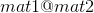

torch.sparse
译者：hijkzzz
警告
这个API目前还处于试验阶段, 可能在不久的将来会发生变化.
Torch支持COO(rdinate )格式的稀疏张量, 这可以有效地存储和处理大多数元素为零的张量.
稀疏张量表示为一对稠密张量:一个值张量和一个二维指标张量. 一个稀疏张量可以通过提供这两个张量, 以及稀疏张量的大小来构造(从这些张量是无法推导出来的!)假设我们要定义一个稀疏张量, 它的分量3在(0,2)处, 分量4在(1,0)处, 分量5在(1,2)处, 然后我们可以这样写
>>> i = torch.LongTensor([[0, 1, 1],
[2, 0, 2]])
>>> v = torch.FloatTensor([3, 4, 5])
>>> torch.sparse.FloatTensor(i, v, torch.Size([2,3])).to_dense()
0 0 3
4 0 5
[torch.FloatTensor of size 2x3]
注意, LongTensor的输入不是索引元组的列表. 如果你想这样写你的指标, 你应该在把它们传递给稀疏构造函数之前进行转置:
>>> i = torch.LongTensor([[0, 2], [1, 0], [1, 2]])
>>> v = torch.FloatTensor([3, 4, 5 ])
>>> torch.sparse.FloatTensor(i.t(), v, torch.Size([2,3])).to_dense()
0 0 3
4 0 5
[torch.FloatTensor of size 2x3]
也可以构造混合稀疏张量, 其中只有前n个维度是稀疏的, 其余维度是密集的.
>>> i = torch.LongTensor([[2, 4]])
>>> v = torch.FloatTensor([[1, 3], [5, 7]])
>>> torch.sparse.FloatTensor(i, v).to_dense()
0 0
0 0
1 3
0 0
5 7
[torch.FloatTensor of size 5x2]
可以通过指定其大小来构造空的稀疏张量：
>>> torch.sparse.FloatTensor(2, 3)
SparseFloatTensor of size 2x3 with indices:
[torch.LongTensor with no dimension]
and values:
[torch.FloatTensor with no dimension]
SparseTensor 具有以下不变量:
- sparse_dim + dense_dim = len(SparseTensor.shape)
- SparseTensor._indices().shape = (sparse_dim, nnz)
- SparseTensor._values().shape = (nnz, SparseTensor.shape[sparse_dim:])
因为SparseTensor._indices()总是一个二维张量, 最小的sparse_dim = 1. 因此, sparse_dim = 0的稀疏张量的表示就是一个稠密张量.
注意
我们的稀疏张量格式允许uncoalesced(未合并) 的稀疏张量, 其中索引中可能有重复的坐标;在这种情况下, 解释是索引处的值是所有重复值项的和. uncoalesced 张量允许我们更有效地实现某些运算符.
在大多数情况下, 你不需要关心一个稀疏张量是否coalesced(合并), 因为大多数操作在给出一个coalesced或uncoalesced稀疏张量的情况下都是一样的. 然而, 有两种情况您可能需要注意.
第一, 如果您重复执行可以产生重复项的操作 (例如, torch.sparse.FloatTensor.add()), 你应该偶尔将稀疏张量coalesced一起, 以防止它们变得太大.
第二, 一些运算符将根据它们是否coalesced产生不同的值 (例如, torch.sparse.FloatTensor._values() and torch.sparse.FloatTensor._indices(), 以及 torch.Tensor.sparse_mask()). 这些操作符以下划线作为前缀, 表示它们揭示了内部实现细节, 应该小心使用, 因为使用合并稀疏张量的代码可能无法使用未合并稀疏张量;一般来说, 在使用这些操作符之前显式地合并是最安全的.
例如, 假设我们想通过直接操作torch.sparse.FloatTensor._values().来实现一个操作符.标量乘法可以用很明显的方法实现, 因为乘法分布于加法之上;但是, 平方根不能直接实现, 因为sqrt(a + b) != sqrt(a) + sqrt(b)(如果给定一个uncoalesced的张量, 就会计算出这个结果).
class torch.sparse.FloatTensor
add()
add_()
clone()
dim()
div()
div_()
get_device()
hspmm()
mm()
mul()
mul_()
narrow_copy()
resizeAs_()
size()
spadd()
spmm()
sspaddmm()
sspmm()
sub()
sub_()
t_()
toDense()
transpose()
transpose_()
zero_()
coalesce()
is_coalesced()
_indices()
_values()
_nnz()
函数
torch.sparse.addmm(mat, mat1, mat2, beta=1, alpha=1)
这个函数和 torch.addmm() 在forward中做同样的事情, 除了它支持稀疏矩阵mat1 的 backward. mat1应具有 sparse_dim = 2. 请注意, mat1的梯度是一个合并的稀疏张量.
参数:
- mat (Tensor) – 被相加的稠密矩阵
- mat1 (SparseTensor) – 被相乘的稀疏矩阵
- mat2 (Tensor) – 被相乘的稠密矩阵
- beta (Number__, optional) – 乘数
mat( )
) - alpha (Number__, optional) – 乘数  (
 )
)
torch.sparse.mm(mat1, mat2)
执行稀疏矩阵mat1 和 稠密矩阵 mat2的矩阵乘法. 类似于 torch.mm(), 如果 mat1 是一个  tensor,
tensor, mat2 是一个  tensor, 输出将会是
tensor, 输出将会是  稠密的 tensor.
稠密的 tensor. mat1 应具有 sparse_dim = 2. 此函数也支持两个矩阵的向后. 请注意, mat1的梯度是一个合并的稀疏张量
参数:
- mat1 (SparseTensor) – 第一个要相乘的稀疏矩阵
- mat2 (Tensor) – 第二个要相乘的稠密矩阵
例子:
>>> a = torch.randn(2, 3).to_sparse().requires_grad_(True)
>>> a
tensor(indices=tensor([[0, 0, 0, 1, 1, 1],
[0, 1, 2, 0, 1, 2]]),
values=tensor([ 1.5901, 0.0183, -0.6146, 1.8061, -0.0112, 0.6302]),
size=(2, 3), nnz=6, layout=torch.sparse_coo, requires_grad=True)
>>> b = torch.randn(3, 2, requires_grad=True)
>>> b
tensor([[-0.6479, 0.7874],
[-1.2056, 0.5641],
[-1.1716, -0.9923]], requires_grad=True)
>>> y = torch.sparse.mm(a, b)
>>> y
tensor([[-0.3323, 1.8723],
[-1.8951, 0.7904]], grad_fn=<SparseAddmmBackward>)
>>> y.sum().backward()
>>> a.grad
tensor(indices=tensor([[0, 0, 0, 1, 1, 1],
[0, 1, 2, 0, 1, 2]]),
values=tensor([ 0.1394, -0.6415, -2.1639, 0.1394, -0.6415, -2.1639]),
size=(2, 3), nnz=6, layout=torch.sparse_coo)
torch.sparse.sum(input, dim=None, dtype=None)
返回给定维度dim中每行SparseTensor input的总和. 如果 :attr::dim 是一个维度的list, reduce将在全部给定维度进行.如果包括全部的 sparse_dim, 此方法将返回 Tensor 代替 SparseTensor.
所有被求和的 dim 将被 squeezed (see torch.squeeze()),导致速出 tensor 的 :attr::dim 小于 input.
backward 过程中, 仅仅 input 的 nnz 位置被反向传播. 请注意, input的梯度是合并的.
参数:
- input (Tensor) – t输入 SparseTensor
- dim (int or tuple of python:ints) – 维度或者维度列表. Default: 所有维度.
- dtype (
torch.dtype, optional) – 返回 Tensor 的数据类型. 默认值: dtype 和input一致.
例子:
>>> nnz = 3
>>> dims = [5, 5, 2, 3]
>>> I = torch.cat([torch.randint(0, dims[0], size=(nnz,)),
torch.randint(0, dims[1], size=(nnz,))], 0).reshape(2, nnz)
>>> V = torch.randn(nnz, dims[2], dims[3])
>>> size = torch.Size(dims)
>>> S = torch.sparse_coo_tensor(I, V, size)
>>> S
tensor(indices=tensor([[2, 0, 3],
[2, 4, 1]]),
values=tensor([[[-0.6438, -1.6467, 1.4004],
[ 0.3411, 0.0918, -0.2312]],
[[ 0.5348, 0.0634, -2.0494],
[-0.7125, -1.0646, 2.1844]],
[[ 0.1276, 0.1874, -0.6334],
[-1.9682, -0.5340, 0.7483]]]),
size=(5, 5, 2, 3), nnz=3, layout=torch.sparse_coo)
# when sum over only part of sparse_dims, return a SparseTensor
>>> torch.sparse.sum(S, [1, 3])
tensor(indices=tensor([[0, 2, 3]]),
values=tensor([[-1.4512, 0.4073],
[-0.8901, 0.2017],
[-0.3183, -1.7539]]),
size=(5, 2), nnz=3, layout=torch.sparse_coo)
# when sum over all sparse dim, return a dense Tensor
# with summed dims squeezed
>>> torch.sparse.sum(S, [0, 1, 3])
tensor([-2.6596, -1.1450])